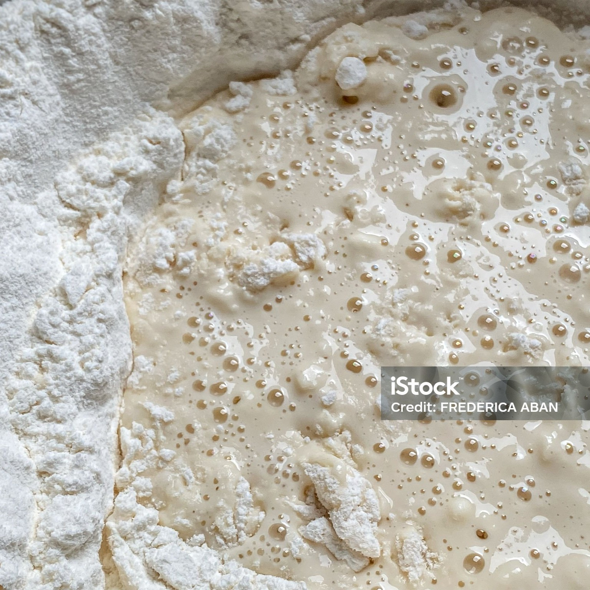
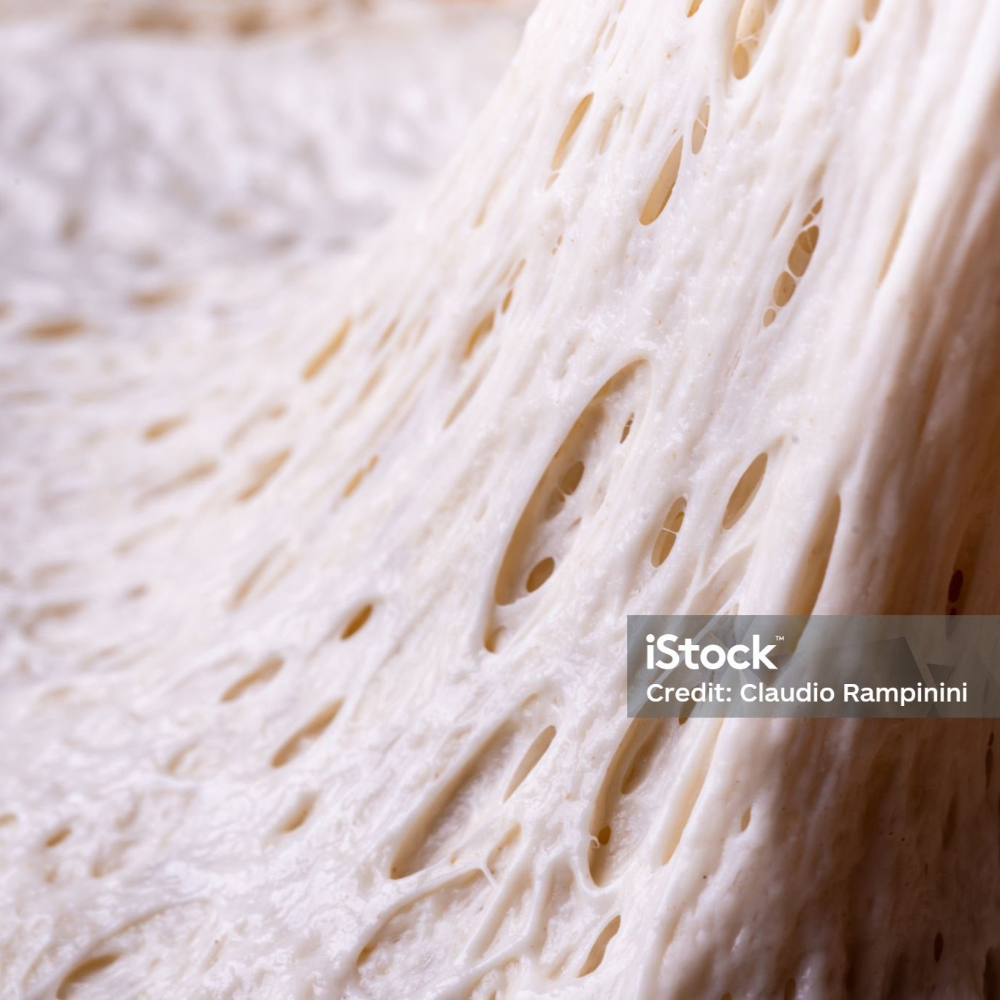
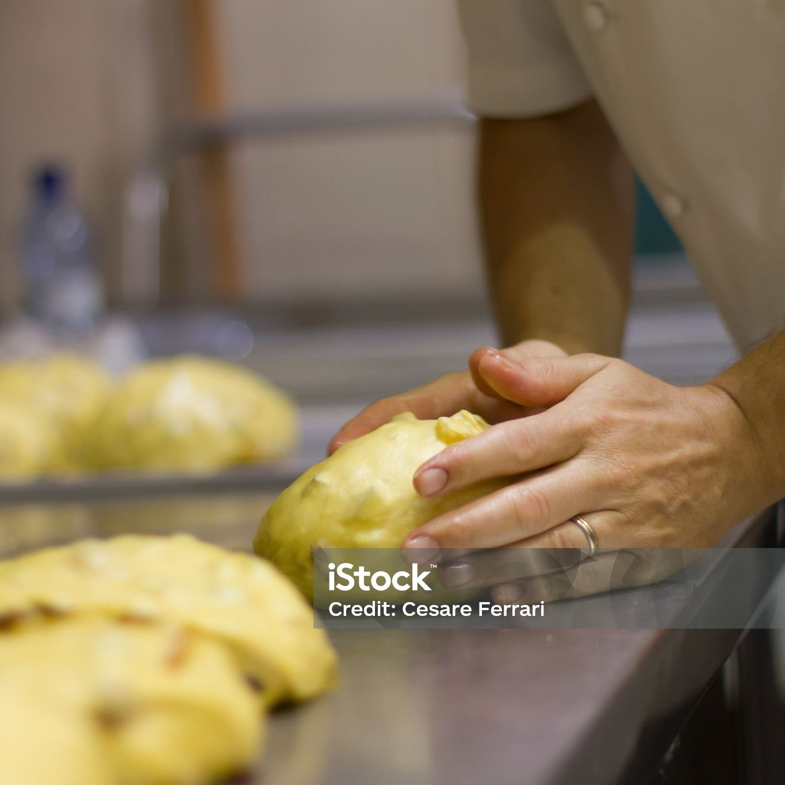
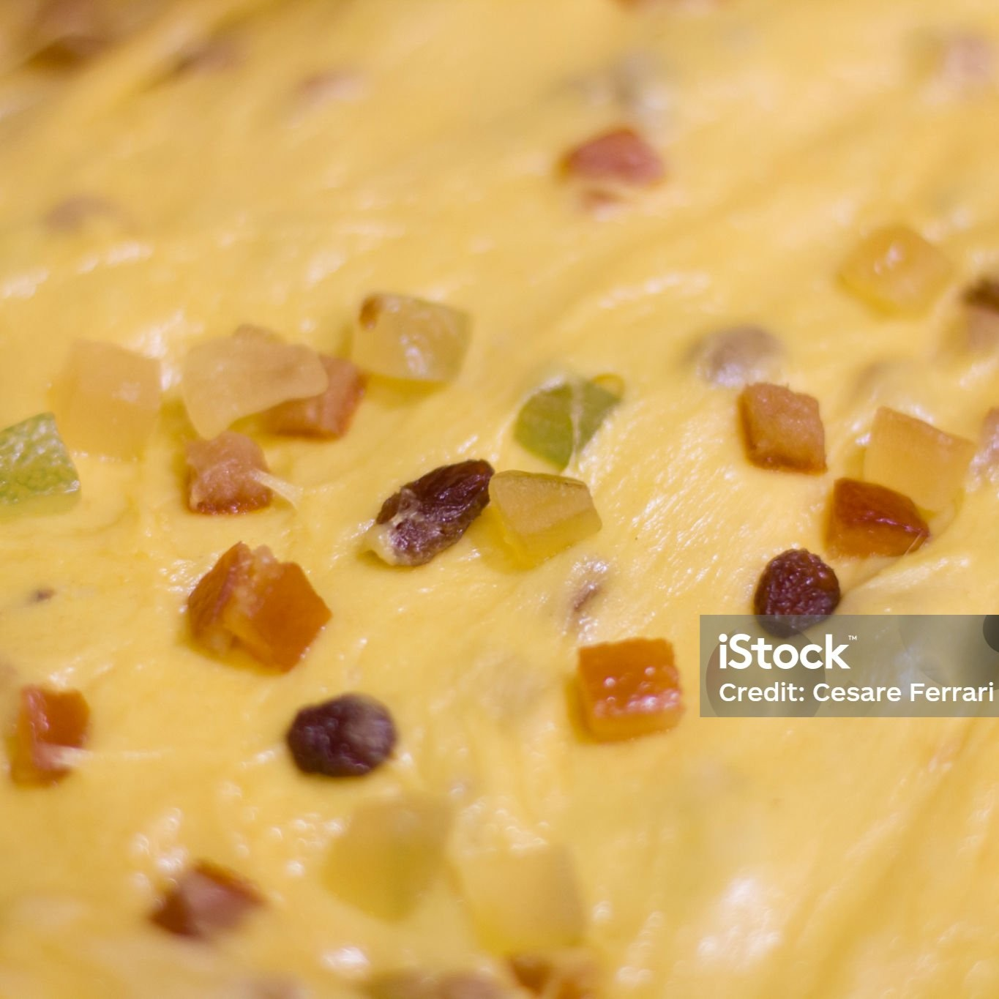
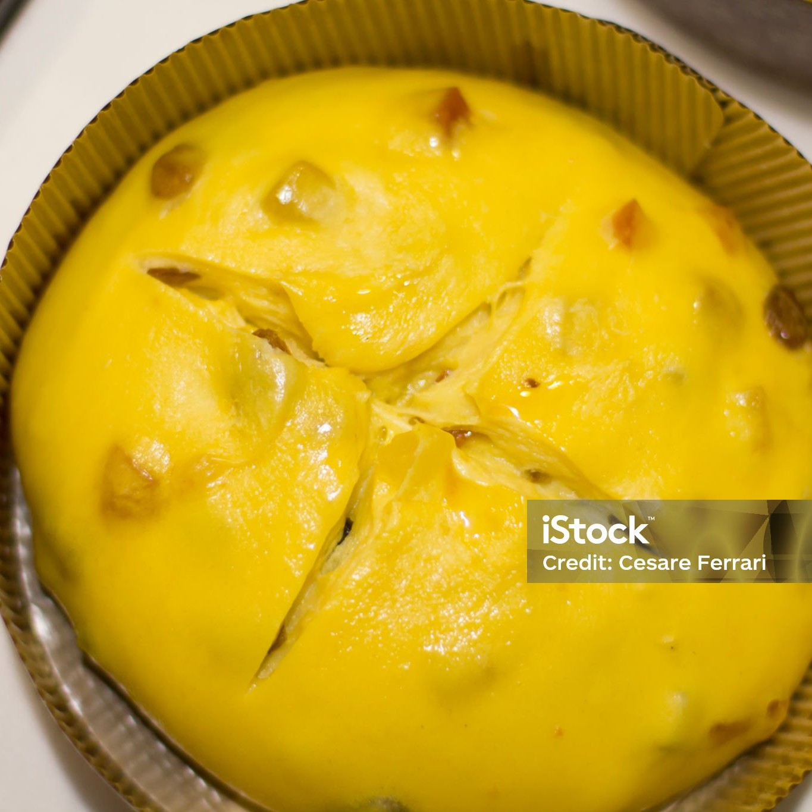
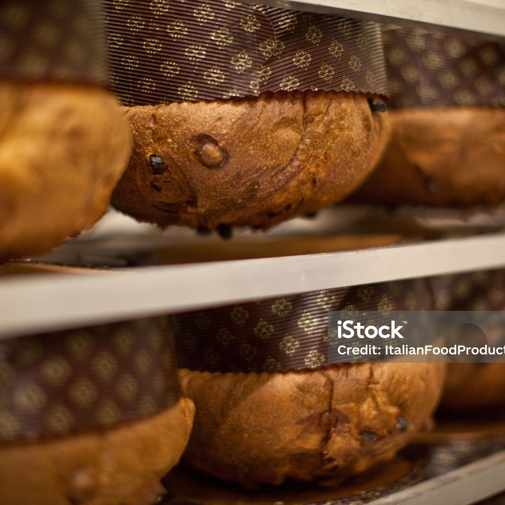
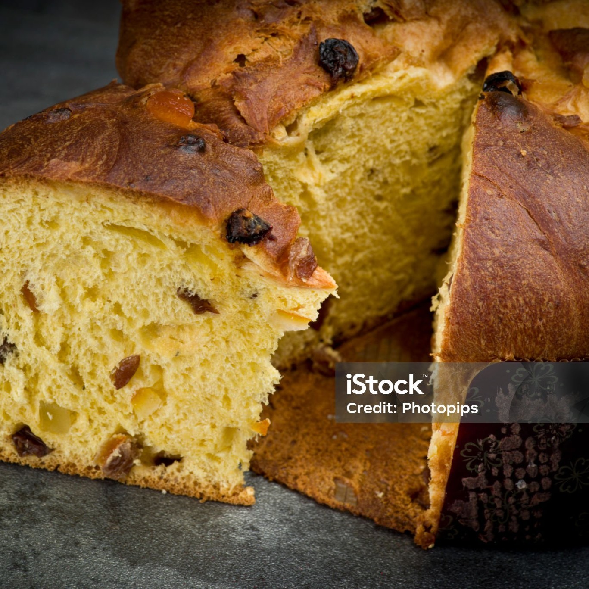

Step 01: The Living Heart
The Birth of Sourdough Starter
The journey of the panettone begins with its most precious ingredient: sourdough starter. Made simply from flour, water and time, this living dough captures the natural yeasts in the air and develops a unique character. Carefully preserved and passed down through the generations, it gives the panettone an authentic flavour that reflects the region from which it originates.

Step 02: Time and Patience
Natural Fermentation
Through a slow, natural fermentation process, the sourdough starter works to develop complex flavours and a soft texture. Unlike industrial methods, this process requires time and dedication, but it gives the panettone a light texture and a rich flavour that are impossible to achieve with instant yeast.

Step 03: The Art of Kneading
48 Hours of Care
The dough comes to life through a lengthy process lasting around 48 hours, involving repeated kneading, resting and proving. During this stage, eggs and butter are skilfully incorporated, creating a rich yet perfectly balanced base, ready to support its extraordinary lightness.

Step 04: The Treasures of Dough
Adding the Ingredients
Now is the time to enrich the dough with carefully selected ingredients: candied fruit, raisins or delicious chocolate chips. Gently stirred in during the final mixing stage, they remain evenly distributed throughout, offering bursts of flavour in every slice.

Step 05: The Gesture of Tradition
La Scarpatura
Before baking, each panettone is cut by hand in a cross shape, a symbolic gesture known as ‘scarpatura’. This mark guides the final rise in the oven, allowing the cake to develop its iconic domed shape.

Step 06: The Upside-Down Rest
Perfect Cooling
As soon as it comes out of the oven, the panettone is turned upside down and left to cool in this position. This crucial step preserves its soft texture and prevents the dome from collapsing, keeping its lightness intact.

Step 07: The Final Masterpiece
An Experience to be Savoured
The result is a panettone with a soft, silky crumb, criss-crossed with vertical air pockets that bear witness to its perfect rise. Rich yet balanced, it is a dessert that embodies patience, tradition and artisanal skill, ready to take centre stage at festive gatherings.
